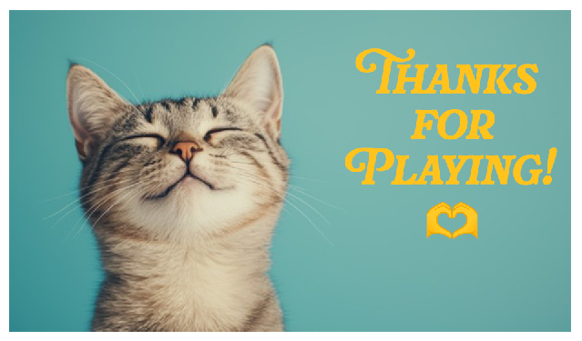
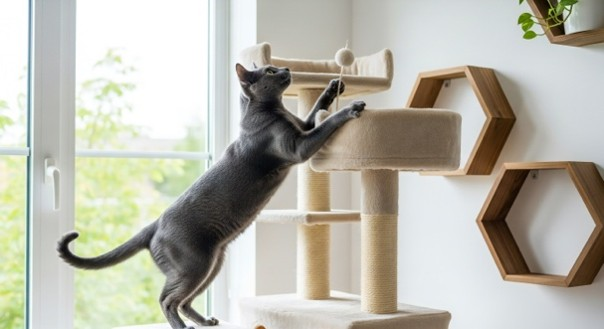

Why Get A Cat?
If you've made it this far into the site, you're either already a cat person or you're getting there. Here's why a cat might be exactly what you need:
Cats are natural stress relievers. According to Kowaliga Veterinary Care, spending time with a cat and listening to them purr can lower blood pressure and cortisol, a hormone linked to stress.
They're steady companions no matter what your schedule looks like. The MEOW Foundation reports that cat owners consistently feel less anxious, stressed, and lonely when they're around their cats compared to when they're not.
Cats are also lower maintenance than most pets. They don't need daily walks, and many are perfectly content while you're at class or work. And every cat has its own personality, as Cooper, Trey, and Simba prove, no two cats act, talk, or love the same way, so there's a cat out there for every kind of person.
QUIZ!
Think your a cat person? Take the Quiz and find out!
Answer each question below, then add up your points to find out your result.
embarnos@syr.edu

Basic Cat Care Needs:
Thinking about getting a cat of your own? Here's what to know before you do:
- Litter box: Cats need a clean litter box, scooped daily, in a quiet and accessible spot in your home.
- Food and water: Cats need fresh water daily (either water bowl or filtered fountain works) and a consistent feeding schedule with age-appropriate dry and wet cat food. Talk to a vet about how much and how often to feed your specific cat.
- Vet visits: Even indoor cats need regular checkups and vaccinations to stay healthy long-term.
- Scratching posts: Cats need to scratch. Giving them a post or scratcher saves your furniture and keeps their claws healthy.
- Playtime: Cats, especially kittens, need daily play to burn off energy and stay mentally stimulated. Wand toys, balls, and puzzle feeders all work well.
- Patience: Every cat has a different personality and comfort level, especially around new people. Give them time and space to warm up on their own terms, the way Cooper does.
